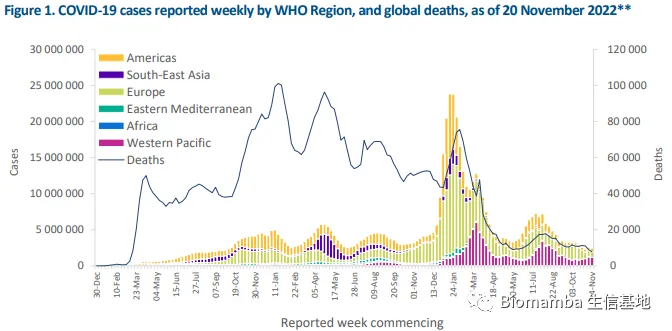

论心掼并独变成"益生菌"这件小事
原文：https://mp.weixin.qq.com/s?__biz=MzAwMzIzOTk5OQ==&mid=2247495089&idx=1&sn=7881d36506803a39528b28d0f99002fe&chksm=9b3c94e1ac4b1df710ae8cdbde6fb40a015c4cd4768944a25910cea22e10e2b05542fc94e5e2#rd 合集：漫谈胡侃
之前在给大家做KEGG在线查询工具(给你安排一个懂生信的工具人（十二）：KEGG通路、基因查询2.0)的时候发现了一个名为"Coronavirus disease−COVID−19 "的通路。这个通路中一共包含了282个基因和16个相关通路。
并没有查到这个通路首次释放的时间，但我相信肯定不是这几个月刚有的，想起来自己也很久没有发推送谈过这个事件了。上一次谈论这类时事还是在八个月之前(你们知道丐帮麽)。恰逢这几天A4纸 很火，我们来关注一下最新的进展。参考世卫组织截至2022年11月28日的报告[2]，现在世界范围内的中奖人数已经达到6.6亿 ，其中有634万 人变成星星。这么看来变星率大约在1%，考虑到2020年初期变星率过高，目前中奖后变星的概率应该要稍微低一点。可能有人会问，你别说的轻巧，这么低的概率，让你中奖你愿不愿意啊。显然，我是肯定不愿意变星的，但是如果你抛开概率不谈，那我认为你背离了现代科学社会，这边只能建议你在家里等这个无细胞生物进化成益生菌 再出门。

再看看公鸡版块上的数据，目前的中奖率是903万 ，其中有3万人变成星星[3]，也就是说变星率大概是0.3% 。同理，考虑到毒力的下降和医疗策略的成熟，现阶段的变星率应该要更低一些。我们再看一个有参考价值的数据，2021年的变星人口大概是1014万[ 4]，简单除以14e，去年公鸡版块上的总体变星率大概就是0.7% ，看起来中招后升天概率反而降一半 ？嚯，咋回事，真的变成益生菌了 ？
？
行了，多的就不能说了，号还是想要的，就这样吧。
参考资料： [1]https://www.genome.jp/entry/map05171[2]https://www.who.int/docs/default-source/coronaviruse/situation-reports/20221123_weekly_epi_update_119.pdf?sfvrsn=1274f7b_4&download=true[3]https://voice.baidu.com/act/newpneumonia/newpneumonia/?from=osari_aladin_banner [4]http://longwing.cn/article/700783be5ac922820dc53a34a6d030a5d83af96f2a36c92be80bcf764855d6ee.html